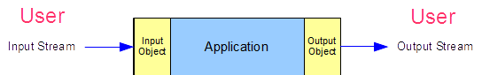
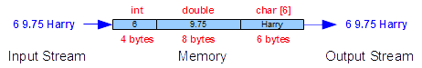

Part F - Refinements
Input and Output Refinements
Use stream objects to interact with users and access persistent data
Introduce manipulators to format data for input and output objects
Describe the member functions that manage the state of streaming objects
"Designing and implementing a general input/output facility for
a programming language is notoriously difficult. ... Nobody
has come up with a solution that pleases everyone" (Stroustrup, 1997) Stream Classes
| Input
| Output
| Manipulators
State
| Robust Validation
| File Stream Classes
| Summary
| Exercises
The chapter entitled Member Functions and Privacy
covered the public member functions that format data passing through the
standard library's iostream objects. The chapter
entitled Input and Output Operators covered the design
of custom input and output operators and introduced the standard library's
fstream classes for processing file data.
This chapter describes in more detail the input and output objects
along with their public member functions reviews the material covered in
those preceding chapters. This chapter introduces manipulators as a
simplifying alternative to member function calls on input and output objects.
Stream and Stream Objects
A stream is a sequence of items without limitation. More
specifically, in C++ a stream is a sequence of bytes.
An executing application accepts data in one stream and outputs data in
another stream. The number of bytes in a stream can be indeterminate.
Input objects store data from an input stream in the application's memory.
Output objects copy data from the application's memory into an output stream.
Both input and output objects operate in FIFO (First In First Out) order.

The standard input and output objects of the iostream
library represent the standard peripheral devices, such as the keyboard and display.
An input object converts a sequence of bytes from its attached input stream
into values of specified type, which are stored in system memory. An output object
converts values of specified type, which have been stored in system memory,
into a sequence of bytes in its associated output stream. Both types
of objects use the data type associated with the region of memory to make the
appropriate conversions from or to the sequence of bytes in each stream.

The data in a stream, unlike the data stored in a region of memory, is not associated
with any particular type. The notion of type is programming language specific.
Input Objects
An input object is an instance of the istream
class. The istream class defines the structure
of an input device.
The object extracts data from the input stream and stores it in
system memory, converting each sequence of bytes in the input stream
into an equivalent value in system memory based on the specified variable's type.
Extraction
The expression for extracting bytes from an input stream
takes the form
inputObject >> identifier
where inputObject is the name of
the input object, >> is the
extraction operator and identifier
is the name of the destination variable.
The standard iostream
library defines one input object for buffered input:
cin.
For example,
int i;
char c;
double x;
char s[8];
cout << "Enter an integer,\n"
"a character,\n"
"a floating-point number and\n"
"a string : " << flush;
cin >> i;
cin >> c;
cin >> x;
cin >> s; // possible overflow
cout << "Entered " << i << ' '
<< c << ' ' << x << ' ' << s << endl;
|
Enter an integer,
a character,
a floating-point and
a string : 6 - 9.75 Harry
Entered 6 - 9.75 Harry
|
Each expression that takes an istream object
as its left operand converts the next sequence of bytes in the
attached input stream into a value stored in the type of the expression's
right operand.
The cin object skips leading whitespace with
numeric, string and character types (in the same way that
scanf("%d"...), scanf("%lf"...), scanf("%s"...) and scanf("
%c"...) skip whitespace in C).
// Leading Whitespace
// leading.cpp
#include <iostream>
using namespace std;
int main() {
char str[11];
cout << "Enter a string : " << endl;
cin >> str;
cout << "|" << str << "|" << endl;
}
|
Note: _ denotes space
Enter a string :
__abc
|abc|
|
Whitespace
The input object treats whitespace in its input stream
as a delimiter for numeric and string data types. In converting
input bytes into a C-style null-terminated string, the input
object adds the null byte after the last non-whitespace character
stored in memory:
// Trailing Whitespace
// trailing.cpp
#include <iostream>
using namespace std;
int main() {
char str[11];
cout << "Enter a string : " << endl;
cin >> str;
cout << "|" << str << "|" << endl;
}
|
Note: _ denotes space
Enter a string :
__abc__
|abc|
|
Cascading
We can compress a sequence of extraction operations into a single compound
expression:
int i;
char c;
double x;
char s[8];
cout << "Enter an integer,\n"
"a character,\n"
"a floating-point number and\n"
"a string : " << flush;
cin >> i >> c >> x >> s;
cout << "Entered " << i << ' '
<< c << ' ' << x << ' ' << s << endl;
|
Enter an integer,
a character,
a floating-point and
a string : 6 - 9.75 Harry
Entered 6 - 9.75 Harry
|
We call such repeated use of the extraction operator
cascading.
Note that reading a sequence of bytes in this manner is discouraged
(see below).
Overflow
In the above two examples, overflow may occur while filling
s. The extraction operator
>> does not restrict the
number of bytes accepted. If more than 7 bytes
are in the input stream the data stored for the string
may corrupt other data that has been stored in memory as shown
on the right:
// Overflow
// overflow.cpp
#include <iostream>
using namespace std;
int main() {
int i;
char c;
double x;
char s[8];
cout << "Enter an integer,\n"
"a character,\n"
"a floating-point number and\n"
"a string : \n";
cin >> i >> c >> x >> s;
cout << "Entered " << endl;
cout << i << ' '
<< c << ' ' << x << ' ' << s << endl;
}
|
Enter an integer,
a character,
a floating-point and
a string :
6 - 9.75 Constantinople
Entered
6 - 2.04952 Constantinople
|
The corruption varies from platform to platform.
Member Functions
The istream type supports
the following member functions:
- ignore(...) - ignores/discards
character(s) from the input buffer
- get(...) - extracts a character
or a string from the input buffer
- getline(...) - extracts a line of
characters from the input buffer
ignore
The ignore() member function extracts bytes from
the input buffer and discards them without skipping whitespace.
The iostream hierarchy defines two overloaded
versions of ignore():
cin.ignore();
cin.ignore(2000, '\n');
|
The no-argument version discards a single byte. The
two-argument version removes and discards up to the number of
bytes specified by the first argument or up to the specified
delimiting character, whichever occurs first and discards the
delimiting character. The default delimiter is the end-of-file
character (not the newline character).
get
The get() member function extracts either
a single character or a string from the input buffer.
Three versions are available:
// Input Extraction Using get()
// get.cpp
#include <iostream>
using namespace std;
int main() {
char c, d, t[8], u[8], v;
c = cin.get(); // extracts a single character
cin.get(d); // extracts a single character
cin.get(t, 8); // newline delimiter - accepts up to 7 chars
// and adds a null byte
cin.ignore(2000, '\n'); // extracts the 'j' and the newline
cin.get(u, 8, '\t'); // tab delimiter - accepts up to 7 chars and
// adds a null byte
cin.ignore(); // extracts the tab
cin.get(v); // extracts a single character
cout << "c = " << c << endl;
cout << "d = " << d << endl;
cout << "t = " << t << endl;
cout << "u = " << u << endl;
cout << "v = " << v << endl;
}
|
The above program produces the following results for the input shown
(the character _ refers to the horizontal tab character):
Input stream : abcdefghij
klmn_opqr
Output:
-------
c = a
d = b
t = cdefghi
u = klmn
v = o
|
get() does not skip leading
whitespace. get(,) leaves the
delimiting character in the input buffer. In using
get(,) we need to remove the delimiting
character, if there is one. Both string versions
- get(char*, int) and get(char*,
int, char) - append a null byte to the sequence of
characters stored in memory.
getline
getline() behaves like get(), but extracts the delimiting character from the input
buffer:
// Input Extraction using getline()
// getline.cpp
#include <iostream>
using namespace std;
int main() {
char t[8], u[8], v;
cin.getline(t, 8); // newline delimiter - accepts up to 7 chars
// and adds a null byte
cin.getline(u, 8, '\t'); // tab delimiter - accepts up to 7 chars and
// adds a null byte
cin.get(v); // extracts a single character
cout << "t = " << t << endl;
cout << "u = " << u << endl;
cout << "v = " << v << endl;
}
|
The above program produces the following results for the input shown
(the character _ refers to the horizontal tab character):
Note: _ denotes '\t' character here
Input stream : cdefghi
jklmn_opqr
Output:
-------
t = cdefghi
u = jklmn
v = o
|
getline(), like get(), does not skip leading whitespace and appends
a null byte to the sequence of characters stored in system memory.
Output Objects
An output object is an instance of the ostream
class. The ostream class defines the structure
of an output device.
An ostream object copies data from system memory
into an output stream; in copying, it converts the data in system memory
into a sequence of characters.
The standard iostream library defines three
distinct standard output objects:
- cout - transfers a buffered sequence
of characters to the standard output device
- cerr - transfers an unbuffered
sequence of characters to the standard error output device
- clog - transfers a buffered sequence
of characters to the standard error output device
Inserting Data
The expression for inserting data into an output stream takes
the form
output << identifier
where output is the
name of the ostream object, << is the insertion operator and
identifier is the name of the variable
or object that holds the data.
For example,
int i = 6;
char c = ' ';
double x = 9.75;
char s[] = "Harry";
cout << i;
cout << c;
cout << x;
cout << c;
cout << s;
cout << endl;
cerr << "Data has been written";
|
6 9.75 Harry
Data has been written
|
Each expression that takes an ostream object
as its left operand converts the data in its right operand into a sequence
of characters based on the type of the expression's right operand.
endl inserts a newline character
into the output stream and flushes the stream's buffer.
Cascading
We may combine a sequence of insertion operations into a compound insertion expression:
int i = 6;
char c = ' ';
double x = 9.75;
char s[] = "Harry";
cout << i << c << x << c << s << endl;
cerr << "Data has been written";
|
6 9.75 Harry
Data has been written
|
Member Functions
The ostream class supports the
following public member functions for formatting control:
- width(int) - sets the field width
to the integer received
- fill(char) - sets the padding
character to the character received
- setf(...) - sets a formatting
flag to the flag received
- unsetf(...) - unsets a
formatting flag for the flag received
- precision(int) - sets the
decimal precision to the integer received
width
The width(int) member function
specifies the minimum width of the next
output field:
// Field Width
// width.cpp
#include <iostream>
using namespace std;
int main() {
int attendance = 27;
cout << "1234567890" << endl;
cout.width(10);
cout << attendance << endl;
cout << attendance << endl;
}
|
1234567890
27
27
|
width(int) applies
only to the next field. Note how the field width for
the first display of attendance is 10,
while the field width for the second display of attendance is just the minimum number
of characters needed to display the value (2).
fill
The fill(char) member function defines the padding
character. The output object inserts this character into the stream
wherever text occupies less space than the specified field width.
The default fill character is ' ' (space).
To pad a field with '*''s, we add:
// Padding
// fill.cpp
#include <iostream>
using namespace std;
int main() {
int attendance = 27;
cout << "1234567890" << endl;
cout.fill('*');
cout.width(10);
cout << attendance << endl;
}
|
1234567890
********27
|
The padding character remains unchanged, until we reset it.
setf, unsetf - Format control
The setf() and unsetf() member functions control formatting and alignment.
Their control flags include:
| Control Flag |
Result |
| ios::fixed |
ddd.ddd |
| ios::scientific |
d.ddddddEdd |
| ios::left |
align left |
| ios::right |
align right |
The scope resolution (ios::)
on these flags identifies them as part of the ios class.
The default format in C++ is general format, which outputs data
in the simplest, most succinct way possible (1.34, 1.345E10, 1.345E-20).
To output a fixed number of decimal places, we select fixed format.
To specify fixed format, we pass the ios::fixed flag to
setf():
// Fixed Format
// fixed.cpp
#include <iostream>
using namespace std;
int main() {
double pi = 3.141592653;
cout << "1234567890" << endl;
cout.width(10);
cout.setf(ios::fixed);
cout << pi << endl;
}
|
1234567890
3.141593
|
Format settings persist until we change them.
To unset fixed format, we pass the ios::fixed flag to
the unsetf() member function:
// Unset Fixed Format
// unsetf.cpp
#include <iostream>
using namespace std;
int main() {
double pi = 3.141592653;
cout << "1234567890" << endl;
cout.width(10);
cout.setf(ios::fixed);
cout << pi << endl;
cout.unsetf(ios::fixed);
cout << pi << endl;
}
|
1234567890
3.141593
3.14159
|
To specify scientific format, we pass the ios::scientific flag to the setf() member function:
// Scientific Format
// scientific.cpp
#include <iostream>
using namespace std;
int main() {
double pi = 3.141592653;
cout << "12345678901234" << endl;
cout.width(14);
cout.setf(ios::scientific);
cout << pi << endl;
}
|
12345678901234
3.141593e+00
|
To turn off scientific format, we pass the ios::scientific flag to
the unsetf() member function.
setf, unsetf - Alignment
The default alignment is right-justified.
To switch to left-justification, we pass the ios::left flag to the setf() member function:
// Left Justified
// left.cpp
#include <iostream>
using namespace std;
int main() {
double pi = 3.141592653;
cout << "1234567890" << endl;
cout.width(10);
cout.fill('?');
cout.setf(ios::left);
cout << pi << endl;
}
|
1234567890
3.14159???
|
To switch off left-justification, we pass the ios::left
flag to the unsetf() member function:
precision
The precision() member function sets the precision of
subsequent floating-point fields. The default
precision is 6 units. General,
fixed, and scientific formats implement precision differently.
General format counts the number of significant digits.
Scientific and fixed formats
count the number of digits following the
decimal point.
For a precision of 2 under general format, we write
// Precision
// precison.cpp
#include <iostream>
using namespace std;
int main() {
double pi = 3.141592653;
cout << "1234567890" << endl;
cout.setf(ios::fixed);
cout.width(10);
cout.precision(2);
cout << pi << endl;
}
|
1234567890
3.14
|
The precision setting applies to the output of all subsequent
floating-point values until we change it.
Manipulators
The C++ language defines manipulators that are elegant alternatives to member
function calls. These manipulators are operands for the extraction and
insertion operators. Manipulators that don't take any argument do not
include parentheses and are defined in <iostream>.
Those that take an argument include parentheses and are defined in
<iomanip>. That is, we must include
<iomanip> whenever we use manipulators that
take an argument.
Input Manipulators
The manipulators of input objects are listed below:
| Manipulator |
Effect |
| skipws |
skip whitespace |
| noskipws |
turn off skip whitespace |
| setw(int) |
set the field width for next input (strings
only) |
The argument to setw() should be one more
than the maximum number of input bytes to be read.
Note that the setw() manipulator is an
alternative to get(char*, int), but
setw() skips leading whitespace
unless we turn off skipping.
Once a manipulator has modified the format settings of an
input object, those settings remain modified.
We may combine manipulators with input variables
directly to form compound expressions. For example,
// Input Manipulators
// manipulator.cpp
#include <iostream>
#include <iomanip>
using namespace std;
int main( ) {
char a[5], b[2], c, d[7];
cout << "Enter : ";
cin >> setw(5) >> a >>
setw(2) >> b >> noskipws >>
c >> skipws >> d;
cout << "Stored '" << a <<
"' & '" << b <<
"' & '" << c <<
"' & '" << d << "'" << endl;
}
|
Enter : abcde fgh
Stored 'abcd' & 'e' & ' ' & 'fgh'
|
Output Manipulators
The manipulators of output objects are listed below:
| Manipulator |
Effect |
| fixed |
output floating-point numbers in fixed-point
format |
| scientific |
output floating-point numbers in scientific
format |
| left |
left justify |
| right |
right justify |
| endl |
output end of line and flush the buffer |
| setprecision(int) |
set the precision of the output |
| setfill(int) |
set the fill character for the field width |
| setw(int) |
set the field width for the next output operand
only |
| setbase(int) |
set the base of the number system for int output |
| flush |
flush the output buffer |
Manipulators (except for setw(i),
which only modifies the format setting for the next object) modify the format settings
until we change them.
For example,
cout << fixed << left << setw(5) <<
setprecision(1) << 12.376 <<
setprecision(5) << 12.376 <<
endl;
|
12.4 12.37600
|
Reference Example
The following program produces the output listed on the right
#include <iostream>
#include <iomanip>
using namespace std;
int main( ) {
/* integers */
cout << "\n* ints *\n"
<< "1234567890\n"
<< "----------\n"
<< 4321 << '\n'
<< setw(7) << 4321 << '\n'
<< setw(7) << setfill('0') << 4321 << setfill(' ')<<'\n'
<< setw(7) << left << 4321 << right << '\n';
/* floats */
cout << "\n* floats *\n"
<< "1234567890\n"
<< "----------\n"
<< 4321.9876546F << '\n';
/* doubles */
cout << "\n* doubles *\n"
<< "1234567890\n"
<< "----------\n"
<< fixed << 4.9876546 << '\n'
<< setw(7) << setprecision(3) << 4.9876546 << '\n'
<< setw(7) << setfill('0') << 4.9876546 << '\n'
<< setw(7) << left << 4.9876546 << right << '\n';
/* characters */
cout << "\n* chars *\n"
<< "1234567890\n"
<< "----------\n"
<< 'd' << '\n'
<< int('d') << '\n';
}
|
* ints *
1234567890
----------
4321
4321
0004321
4321
* floats *
1234567890
----------
4321.99
* doubles *
1234567890
----------
4.987655
4.988
004.988
4.98800
* chars *
1234567890
----------
d
100
|
Notes:
- a double or a float rounds to the requested precision
- char data displays in either
character or decimal format
to output its numeric code,
we cast the value to an
int (the value output for 'd'
here is its ASCII value).
State
The ios base class defines public member functions
that report or change the state of istream and
ostream objects.
These member functions include:
- good() - the next operation might
succeed
- fail() - the next operation will
fail
- eof() - end of data has been
encountered
- bad() - the data may be
corrupted
- clear() - reset the state to
good
For user-friendly input processing, we should check the state of the
input object every time it extracts a sequence of bytes from the
input buffer. If the object has encountered an invalid character,
the object will fail and leave that invalid character in the input buffer and the
fail() member function will return true.
Before a failed object can continue extracting data from the input buffer,
we must clear the object of its failed state. The clear()
function resets the state of the object to good:
if(cin.fail()) { // checks if cin is in a failed state
cin.clear(); // clears state to allow further extraction
cin.ignore(2000, '\n'); // clears the input buffer
}
|
The following section provides a complete example.
Robust Validation
Robust validation enhances the friendliness of any application that processes
input. The state functions of the iostream classes
help us validate input robustly. Robust validation checks the input object's
state after each extraction to ensure that the object has converted the sequence of
bytes into a value and that that converted value is valid and within admissible
bounds. Robust validation rejects invalid input and out-of-bound values,
resetting any failed state and requesting fresh input as necessary from the user.
getPosInt
To extract a positive int
that is not greater than max from the standard input
device, we write
// getPosInt extracts a positive integer <= max
// from standard input and returns its value
//
int getPosInt(int max) {
int value;
int keepreading;
keepreading = 1;
do {
cout << "Enter a positive integer (<= " << max << ") : ";
cin >> value;
if (cin.fail()) { // check for invalid character
cerr << "Invalid character. Try Again." << endl;
cin.clear();
cin.ignore(2000, '\n');
} else if (value <= 0 || value > max) {
cerr << value << " is outside the range [1," <<
max << ']' << endl;
cerr << "Invalid input. Try Again." << endl;
cin.ignore(2000, '\n');
// you may choose to omit this branch
} else if (char(cin.get()) != '\n') {
cerr << "Trailing characters. Try Again." << endl;
cin.ignore(2000, '\n');
} else
keepreading = 0;
} while(keepreading == 1);
return value;
}
|
File Stream Classes
The ios inheritance hierarchy includes three derived classes
specifically designed for processing file streams. These classes manage the
communications between file streams containing 8-bit bytes and system memory.

The fstream system header file defines its classes
in the std namespace:
The fstream classes include:
- ifstream - processes input from a file stream
- ofstream - processes output to a file stream
- fstream - processes input from and output to a file stream
These classes access a file stream through separate input and output buffers.
Extraction and Insertion Operator Overloads
The standard library overloads the extraction and insertion operators for
the fundamental types. We overload these operators for fstream
objects as left operands and custom types as right operands.
Fundamental Types
For fundamental types see the chapter entitled
Input and Output Operators.
Custom Types
Typicall', custom types require separate overloads of both extraction and insertion
operators.
While reading standard input involves prompting the suer, reading a file does not require any prompts.
The extraction operator for file input objects excludes prompts.
Since writing to a file matches the convention for subsequent reading from that file,
the output to a file generally differs from the more decorated output to be read by
the user.
Moreover, since the insertion operator that takes an ostream
object as its left operand class is a templated function and the ofstream
class is a class derived from the ostream class, ambiguities
arise with direct overloading of the operator for a custom type. One way to avoid
these ambiguities is to define a separate file class for the custom type and overload the
insertion operator for that file class.
The file related additions are highlighted in the listings below.
The header file for the Student class includes the
definition of a StudentFile class that overloads the
insertion operators for an ofstream object that
receives the Student class:
// Student.h
#include <iostream> // for std::ostream, std::istream
#include <fstream> // for std::ifstream
const int NG = 13;
class StudentFile;
class Student {
int no;
float grade[NG];
int ng;
public:
Student();
Student(int);
Student(int, const float*, int);
void read(std::istream&);
void read(std::ifstream&);
void display(std::ostream& os) const;
void display(StudentFile& os) const;
};
std::istream& operator>>(std::istream& is, Student& s);
std::ostream& operator<<(std::ostream& os, const Student& s);
std::ifstream& operator>>(std::ifstream& is, Student& s);
class StudentFile {
public:
std::ofstream f;
StudentFile(const char*);
StudentFile& operator<<(char);
StudentFile& operator<<(int);
StudentFile& operator<<(float);
void close();
};
StudentFile& operator<<(StudentFile& os, const Student& s);
|
The implementation file overloads the file extraction and insertion
operators for our Student class and defines
the insertion operator for StudentFile objects
as left operands and fundamental types as right operands:
// Student.cpp
#include "Student.h"
Student::Student() {
no = 0;
ng = 0;
}
Student::Student(int n) {
*this = Student(n, nullptr, 0);
}
Student::Student(int sn, const float* g, int ng_) {
bool valid = sn > 0 && g != nullptr && ng_ >= 0;
if (valid)
for (int i = 0; i < ng_ && valid; i++)
valid = g[i] >= 0.0f && g[i] <= 100.0f;
if (valid) {
// accept the client's data
no = sn;
ng = ng_ < NG ? ng_ : NG;
for (int i = 0; i < ng; i++)
grade[i] = g[i];
} else {
*this = Student();
}
}
void Student::read(std::istream& is) {
int no; // will hold the student number
int ng; // will hold the number of grades
float grade[NG]; // will hold the grades
std::cout << "Student Number : ";
is >> no;
std::cout << "Number of Grades : ";
is >> ng;
if (ng > NG) ng = NG;
for (int i = 0; i < ng; i++) {
std::cout << "Grade " << i + 1 << " : ";
is >> grade[i];
}
// construct a temporary Student
Student temp(no, grade, ng);
// if data is valid, copy temporary object into current object
if (temp.no != 0)
*this = temp;
}
void Student::read(std::ifstream& is) {
int no; // will hold the student number
int ng; // will hold the number of grades
float grade[NG]; // will hold the grades
is >> no;
is >> ng;
if (ng > NG) ng = NG;
for (int i = 0; i < ng; i++) {
is >> grade[i];
}
// construct a temporary Student
Student temp(no, grade, ng);
// if data is valid, copy temporary object into current object
if (temp.no != 0)
*this = temp;
}
void Student::display(std::ostream& os) const {
if (no > 0) {
os << no << ":\n";
os.setf(std::ios::fixed);
os.precision(2);
for (int i = 0; i < ng; i++) {
os.width(6);
os << grade[i] << std::endl;
}
os.unsetf(std::ios::fixed);
os.precision(6);
} else {
os << "no data available" << std::endl;
}
}
void Student::display(StudentFile& os) const {
os << no << '\n';
os << ng << '\n';
for (int i = 0; i < ng; i++)
os << grade[i] << '\n';
}
std::ostream& operator<<(std::ostream& os, const Student& s) {
s.display(os);
return os;
}
std::istream& operator>>(std::istream& is, Student& s) {
s.read(is);
return is;
}
std::ifstream& operator>>(std::ifstream& is, Student& s) {
s.read(is);
return is;
}
StudentFile& operator<<(StudentFile& f, const Student& s) {
s.display(f);
return f;
}
StudentFile::StudentFile(const char* filename) : f(filename) {}
StudentFile& StudentFile::operator<<(char c) {
f << c;
return *this;
}
StudentFile& StudentFile::operator<<(int i) {
f << i;
return *this;
}
StudentFile& StudentFile::operator<<(float v) {
f << v;
return *this;
}
void StudentFile::close() {
f.close();
}
|
Note the definitions of the read() and
display() member functions overloaded for file
input and output respectively.
The client file that uses this upgraded Student
class creates the file objects, writes to them and reads from them:
// Custom File Operators
// customFile.cpp
#include <iostream>
#include "Student.h"
int main ( ) {
Student harry;
std::cin >> harry;
std::cout << harry;
StudentFile studentFile("Student.txt");
studentFile << harry;
studentFile.close();
std::ifstream inFile("Student.txt");
inFile >> harry;
std::cout << harry;
}
|
Student Number : 1234
Number of Grades : 3
Grade 1 : 56.7
Grade 2 : 78.9
Grade 3 : 85.4
1234:
56.70
78.90
85.40
1234:
56.70
78.90
85.40
|
The records written to the Student.txt file
by this program are:
Nice to Know
Open-Mode Flags
To customize a file object's connection mode we use combinations of flags
passed as an optional second argument to the object's constructor or its
open() member function.
The flags defining the connection mode are:
- std::ios::in open for reading
- std::ios::out open for writing
- std::ios::app open for appending
- std::ios::trunc open for writing, but
truncate if file exists
- std::ios::ate move to the end of the
file once the file is opened
Practical combinations of these flags include
- std::ios::in|std::ios::out open for reading
and writing (default)
- std::ios::in|std::ios::out|std::ios::trunc open
for reading and overwriting
- std::ios::in|std::ios::out|std::ios::app open
for reading and appending
- std::ios::out|std::ios::trunc open for
overwriting
The vertical bar (|) is the bit-wise or
operator.
The Defaults
The default combinations for no-argument and one-argument constructors are:
- ifstream - std::ios::in - open for reading
- ofstream - std::ios::out - open for writing
- fstream - std::ios::in|std::ios::out - open
for reading and writing
The Logical Negation Operator
The standard library overloads the logical negation operator (!)
as an alternative to the fail() query.
This operator reports true if the latest operation
has failed or if the stream has encountered a serious error.
We can invoke this operator on any stream object to check the
success of the most recent activity:
if (fin.fail()) {
std::cerr << "Read error";
fin.clear();
}
|
if (!fin) {
std::cerr << "Read error";
fin.clear();
}
|
The operator applied directly to a file object returns the state of the connection:
#include <iostream>
#include <fstream>
int main() {
std::ofstream fout("output.txt"); // connects fout to output.txt
// for writing
if (!fout) {
std::cerr << "File is not open" << std::endl;
} else {
std::cout << "File is open" << std::endl;
}
}
|
Rewinding a Connection
istream, fstream
To rewind an input stream we call:
- istream& seekg(0)
- sets the current position in the input stream to 0
ostream, fstream
To rewind an output stream we call:
- ostream& seekp(0)
- sets the current position in the output stream to
0
Premature Closing
To close a file connection before the file object
has gone out of scope, we call the close()
member function on the object:
// Concatenate Two Files
// concatenate.cpp
#include <fstream>
int main() {
std::ifstream in("src1.txt"); // open 1st source file
std::ofstream out("output.txt"); // open destination file
if (in) {
while (!in.eof())
out << in.get(); // byte by byte copy
in.clear();
in.close(); // close 1st source file
}
in.open("src2.txt"); // open 2nd source file
if (in) {
while (!in.eof())
out << in.get(); // byte by byte copy
in.clear();
}
}
|
Writing to and Reading from the Same File
The fstream class supports both reading and
writing operations. An instance of this class
can write to a file and read from that same file.
For example, the following program produces the output
shown on the right
// File Objects - writing and reading
// fstream.cpp
#include <iostream>
#include <fstream>
int main() {
std::fstream f("file.txt",
std::ios::in|std::ios::out|std::ios::trunc);
f << "Line 1" << std::endl; // record 1
f << "Line 2" << std::endl; // record 2
f << "Line 3" << std::endl; // record 3
f.seekp(0); // rewind output
f << "****"; // overwrite
char c;
f.seekg(0); // rewind input
f << std::noskipws; // don't skip whitespace
while (f.good()) {
f >> c; // read 1 char at a time
if (f.good())
std::cout << c; // display the character
}
f.clear(); // clear failed (eof) state
}
|
**** 1
Line 2
Line 3
|
Summary
- the extraction and insertion operators support cascading
- get() and
getline() read strings with whitespace
- a field width setting only holds for the next field
- all non-field width settings persist until changed
- precision has different meanings under general,
scientific, and fixed formats
- manipulators are the elegant alternative to member function based format settings
- manipulators that take arguments are defined in #include <iomanip>
- a failed state must be cleared before processing can continue
- the extraction and insertion operators are overloaded for file objects as left operands and fundamental types as right operands
- an input file object is an instance of an ifstream class
- an output file object is an instance of an ofstream class
- we may overload the extraction and insertion operators for file objects as left operands and our class types as right operands
Exercises
- Experiment with get(), getline() and
state on little programs of your own
- Complete the Handout on Input and Output
|